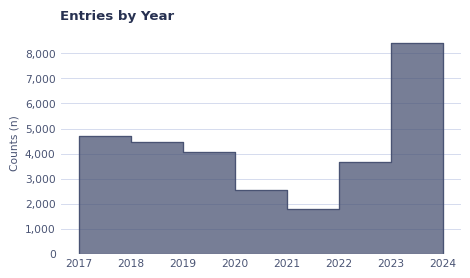
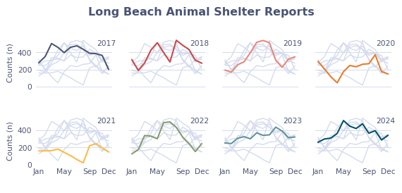

import pandas as pd
import matplotlib.pyplot as plt
import matplotlib.ticker as ticker
import seaborn as sns
import calendar # to convert number to monthAbout the Data
Note
This week we’re exploring the Long Beach Animal Shelter Data!
The dataset comes from the City of Long Beach Animal Care Services via the {animalshelter} R package.
This dataset comprises of the intake and outcome record from Long Beach Animal Shelter.
1 Initializing
1.1 Load libraries
1.2 Set theme
plt.style.use('~/Documents/GitHub/tidytuesday/posts/2025-03-04/rb-style.mplstyle')
# Color palette
color_map = [
"#495373",
"#ce4441",
"#ee8577",
"#eb7926",
"#ffbb44",
"#859b6c",
"#62929a",
"#004f63",
"#122451",
]1.3 Load this week’s data
longbeach = pd.read_csv('https://raw.githubusercontent.com/rfordatascience/tidytuesday/main/data/2025/2025-03-04/longbeach.csv')2 Time to plot!
Plot 1
# Add year
longbeach["outcome_year"] = pd.to_datetime(longbeach["outcome_date"]).dt.year
# Start plot ----------------------------------------------------------------------------
fig, ax = plt.subplots()
fig.set_figwidth(5)
fig.set_figheight(3)
# Grid
ax.set_axisbelow(True)
ax.grid(True, axis="y", which="major", linestyle="-", linewidth=0.7, color="#d3daed")
sns.histplot(longbeach, x="outcome_year", binwidth=1, color = color_map[0],element="step")
# Apply the formatter to the y-axis
ax.yaxis.set_major_formatter(ticker.StrMethodFormatter("{x:,.0f}"))
ax.set_title("Entries by Year")
ax.set_ylabel("Counts (n)")
ax.set_xlabel("")
plt.tight_layout()
plt.show()
# ---------------------------------------------------------------------------------------
Plot 2
# Add year
longbeach["outcome_month"] = pd.to_datetime(longbeach["outcome_date"]).dt.month
data2plot = (
longbeach.groupby(["outcome_year", "outcome_month"]).size().reset_index(name="n")
)
data2plot["outcome_year"] = data2plot["outcome_year"].astype("int")
data2plot["outcome_month"] = data2plot["outcome_month"].astype("int")
month_map = {i: calendar.month_abbr[i] for i in range(1, 13)}
data2plot["outcome_month_abbr"] = data2plot["outcome_month"].apply(
lambda x: month_map.get(x)
)
# Start plot ----------------------------------------------------------------------------
fig, ax = plt.subplots()
fig.set_figwidth(5)
fig.set_figheight(3)
# Grid
ax.set_axisbelow(True)
ax.grid(True, axis="y", which="major", linestyle="-", linewidth=0.7, color="#d3daed")
sns.lineplot(
data2plot, x="outcome_month_abbr", y="n", hue="outcome_year", palette=color_map
)
# Apply the formatter to the y-axis
ax.yaxis.set_major_formatter(ticker.StrMethodFormatter("{x:,.0f}"))
# Labels
ax.set_title("Entries by Year")
ax.set_ylabel("Counts (n)")
ax.set_xlabel("")
# Legend
legend = plt.legend(
title="Year",
title_fontproperties={"weight": "bold"},
loc="lower right",
)
plt.setp(legend.get_title(), color='#495373')
# Plot & Pray
plt.tight_layout()
plt.show()Plot 3
# Start plot ----------------------------------------------------------------------------
# Geometry
g = sns.relplot(
data2plot,
x="outcome_month_abbr",
y="n",
hue="outcome_year",
palette=color_map,
legend=False,
kind="line",
col="outcome_year",
col_wrap=4,
zorder=5,
height=1.51,
aspect=1
)
# Iterate over each subplot to customize further
for year, ax in g.axes_dict.items():
# Add the title as an annotation within the plot
ax.text(0.8, 0.85, year, transform=ax.transAxes, color = '#495373', fontsize = 8)
# Plot every year's time series in the background
sns.lineplot(
data2plot,
x="outcome_month_abbr",
y="n",
units="outcome_year",
estimator=None,
color="#d3daed",
linewidth=1,
ax=ax,
)
# Grid
ax.set_axisbelow(True)
ax.grid(True, axis="y", which="major", linestyle="-", linewidth=0.7, color="#d3daed")
# Apply the formatter to the y-axis
# g.yaxis.set_major_formatter(ticker.StrMethodFormatter("{x:,.0f}"))
# Reduce the frequency of the x axis ticks
ax.set_xticks(ax.get_xticks()[::4]+[ax.get_xticks()[-1]])
# Labels
g.fig.suptitle("Long Beach Animal Shelter Reports", y=.93, color = '#495373', weight = 'bold')
g.set_titles(" ")
g.set_ylabels("Counts (n)")
g.set_xlabels(" ")
# Legend
# legend = g.legend(
# title="Year",
# title_fontproperties={"weight": "bold"},
# loc="lower right",
# )
# g.setp(legend.get_title(), color='#495373')
# Plot & Pray
g.tight_layout()